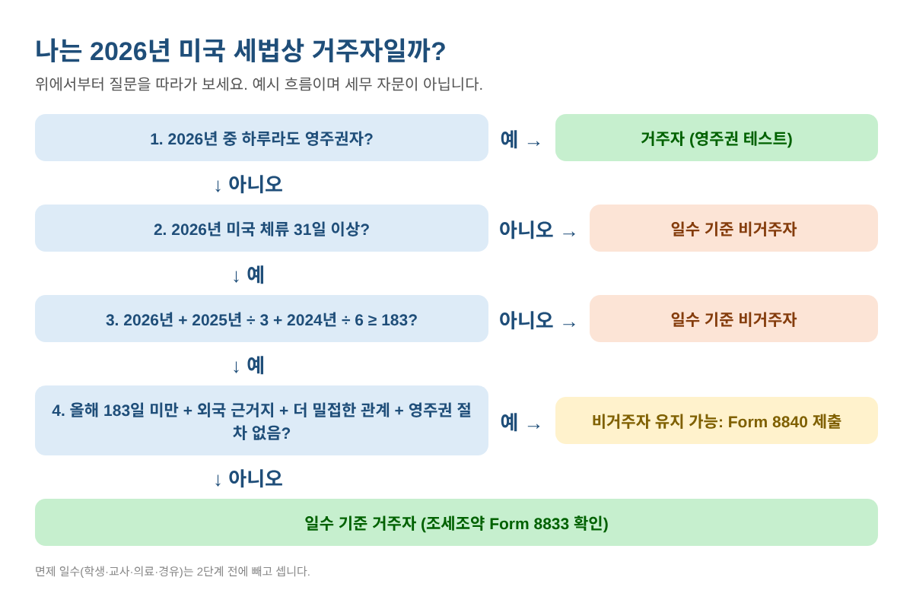
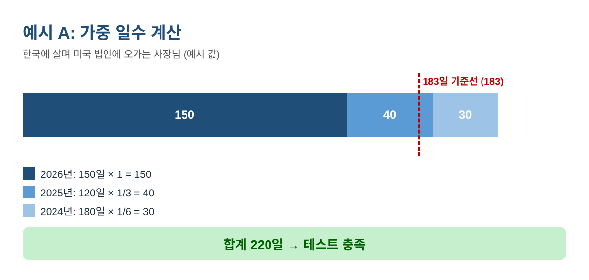
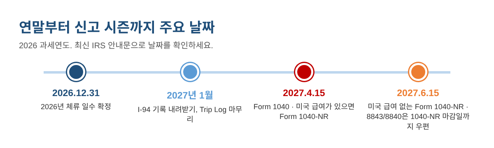

나는 미국 세법상 거주자일까? 183일 실질 체류 테스트 일수 세는 법 (2026)
한국과 미국을 오가며 지내다 보면 꼭 한 번은 이 질문을 만납니다. "나는 미국 세법상 거주자인가, 비거주자인가?" 한국에 살면서 미국 법인 일로 자주 출장 오시는 사장님, 올해 투자·취업 비자로 오신 분, 유학생과 연구원, 자녀 집에 몇 달씩 머무시는 부모님 모두 해당됩니다. 거주자는 전 세계 소득을 Form 1040으로 신고하고, 비거주자는 원칙적으로 미국 원천 소득만 Form 1040-NR로 신고합니다. 대부분은 결국 '며칠 있었나'로 갈리는데, 이 계산을 틀리는 경우가 의외로 많습니다.
이 글에서는 IRS의 실질 체류 테스트(Substantial Presence Test, 흔히 183일 규칙)를 순서대로 따라 할 수 있게 정리했습니다. 엑셀·구글 시트에 그대로 입력할 수 있는 수식, 계산 예시, 결과를 바꾸는 예외 규정, 2026 과세연도 서식과 마감일까지 담았습니다.
1단계: 테스트의 두 가지 조건
아래 두 조건을 모두 충족하면 2026년 실질 체류 테스트를 충족합니다.
- 2026년에 31일 이상 미국에 실제로 있었고,
- 2026·2025·2024년을 합쳐 183일 이상: 2026년 일수는 전부, 2025년 일수는 1/3, 2024년 일수는 1/6만 셉니다.
그해 하루라도 영주권(green card)을 갖고 있었다면 일수와 관계없이 '영주권 테스트'로 거주자입니다.

2단계: 미국에 있었던 날을 모두 세기
IRS는 하루 중 잠깐이라도 미국에 있었던 날을 1일로 봅니다. 그래서 입국한 날과 출국한 날 모두 셉니다. 호텔에 3박 했다면 보통 4일입니다.
가장 정확한 방법은 미국 CBP 공식 사이트에서 I-94 출입국 기록(travel history)을 내려받아 탑승권·여권 도장과 맞춰 보는 것입니다. 시트에 여행 한 번당 한 줄씩 적습니다.
| 열 | 입력 내용 | 예시 (예시 값) |
|---|---|---|
| A | 입국일 | 2026-06-01 |
| B | 출국일 | 2026-07-31 |
| C | 2026년 일수 | =MAX(0,MIN(B2,DATE(2026,12,31))-MAX(A2,DATE(2026,1,1))+1) → 61 |
| D | 2025년 일수 | =MAX(0,MIN(B2,DATE(2025,12,31))-MAX(A2,DATE(2025,1,1))+1) → 0 |
| E | 2024년 일수 | 같은 수식에 2024 → 0 |
예시 값입니다. 여행마다 한 줄씩 수식을 복사하고, 열마다 =SUM(C2:C50)으로 합계를 냅니다.
MIN·MAX가 여행 기간을 해당 연도 안으로 잘라 주기 때문에, 2024년 11월 2일부터 2025년 1월 13일까지 머문 경우 2024년 60일, 2025년 13일로 정확히 나뉩니다.
세지 않는 날
- 캐나다·멕시코에 살면서 미국으로 정기 통근한 날
- 미국 밖 두 곳 사이를 이동하며 미국에 24시간 미만 머문 날 (경유)
- 외국 선박의 정규 승무원으로 머문 날
- 미국에 있는 동안 생긴 질병 때문에 출국하지 못한 날
- 면제자로 있었던 날: F·J·M·Q 비자의 일정 학생, J·Q 비자의 교사·연수생 등
이 일수는 3단계 전에 연도별 합계에서 뺍니다. 면제자나 질병으로 머문 분은 보통 Form 8843으로 그 내용을 신고합니다.
3단계: 가중 합계 계산
B2(올해), B3(작년), B4(재작년)에 연도별 합계를 넣으면 수식 하나로 결과가 나옵니다.
=IF(AND(B2>=31, B2+B3/3+B4/6>=183), "충족", "미충족")

| 예시 (예시 값) | 2026 / 2025 / 2024 일수 | 계산 | 결과 |
|---|---|---|---|
| A. 한국에 살며 미국 법인에 오가는 사장님 | 150 / 120 / 180 | 150 + 40 + 30 = 220 | 충족 |
| B. 2026년 6월 투자 비자로 이주 | 200 / 20 / 0 | 200 + 6.7 + 0 = 206.7 | 충족 |
| C. F-1 유학생 (모두 면제일) | 300 / 330 / 250 | 0 + 0 + 0 = 0 | 미충족 |
| D. 해마다 4개월 머무는 겨울 체류자 | 121 / 121 / 121 | 121 + 40.3 + 20.2 = 181.5 | 미충족 |
설명을 위한 예시 값입니다. 실제 결과는 본인 사실관계에 따라 달라집니다.
예시 A를 보세요. 2026년에는 150일만 있었지만 이전 2년 때문에 70일이 더해져 테스트를 충족합니다. "올해 183일이 안 되니 비거주자"라고 단정하면 안 되는 이유입니다.
올해 남은 일수는?
거꾸로 계산하면 됩니다. =CEILING(183-B3/3-B4/6,1)-1 은 가중 합계 183일 미만으로 남을 수 있는 올해 최대 일수입니다. 결과가 31 미만이면 31일 조건 덕분에 30일까지는 괜찮습니다. 예시 D는 183 − 40.3 − 20.2 = 122.5이므로 122일까지는 미충족입니다. 하루 더는 괜찮지만 이틀 더 있으면 충족하게 됩니다.
4단계: 결론 내리기 전에 예외 확인
| 규정 | 적용되는 경우 | 서식 |
|---|---|---|
| 더 밀접한 관계 예외 | 올해 183일 미만, 외국에 세법상 근거지(tax home), 미국보다 그 나라와 더 밀접한 관계. 영주권을 신청했거나 절차를 밟았다면 쓸 수 없습니다. | Form 8840 |
| 학생 | 면제 학생으로 있던 날은 세지 않습니다. 학생으로 5개 역년을 넘기면, 영구 거주 의사가 없음을 보이지 않는 한 면제되지 않습니다. | Form 8843 |
| 교사·연수생 | 이전 6개 역년 중 2년(일부라도) 교사·연수생·학생으로 면제받았다면 면제되지 않습니다 (외국 고용주가 급여를 준 경우 특칙). | Form 8843 |
| 조세조약 거주지 판정 | 한국처럼 조약 체결국의 세법상 거주자이기도 하면, 조약에 따라 그 나라 거주자로 볼 수 있습니다. 신고 방식이 달라집니다. | Form 1040-NR + Form 8833 |
교육용 요약입니다. 모든 조건은 서식 안내문에서 확인하세요.
예시 A는 전형적인 '더 밀접한 관계' 사례입니다. 2026년 183일 미만이고, 주된 사업과 집이 한국에 있으며, 영주권을 신청하지 않았습니다. Form 8840을 기한 내에 내면 2026년 비거주자로 인정받을 수 있습니다. 반면 예시 B는 2026년에 183일 이상 있었으므로 이 예외를 쓸 수 없습니다.
처음 온 해와 떠나는 해
일수 기준 거주자는 보통 테스트를 충족한 해에 처음 미국에 온 날부터 거주자가 되고, 그 날짜를 정할 때 최대 10일은 무시할 수 있습니다. 온 해와 떠나는 해는 일부 거주자·일부 비거주자인 '이중 신분(dual-status)' 연도인 경우가 많아 더 꼼꼼히 봐야 합니다.
5단계: 서식과 마감일 메모

- Form 1040 (거주자): 2027년 4월 15일
- Form 1040-NR (비거주자): 원천징수 대상 미국 급여가 있으면 보통 2027년 4월 15일, 없으면 2027년 6월 15일
- Form 8843·Form 8840: Form 1040-NR에 첨부. 신고서를 낼 필요가 없다면 서식 안내에 따라 Form 1040-NR 마감일까지 텍사스 Austin IRS 센터로 우편 발송
- Form 8833: 조약상 거주지 판정을 주장할 때 Form 1040-NR에 첨부
자주 하는 실수
- 날 수가 아니라 박 수로 세거나, 입국일·출국일을 빼먹는 것
- 올해만 보고 작년·재작년 일수를 무시하는 것
- 예약 변경으로 겹친 여행을 두 번 입력하는 것
- 학생은 계속 면제라고 생각하는 것 (5년 한도를 쉽게 넘깁니다)
- Form 8840 기한을 놓쳐 '더 밀접한 관계' 예외를 못 쓰게 되는 것
- Form 8833 없이 조약 적용을 주장하는 것
자주 묻는 질문
밤 11시에 도착해도 그날을 세나요?
네. 하루 중 잠깐이라도 미국에 있었으면 1일입니다.
2026년에 150일 있었으면 자동으로 비거주자인가요?
아닙니다. 작년 일수의 1/3과 재작년 일수의 1/6을 더해 183일이 넘으면 테스트를 충족합니다. 그다음 '더 밀접한 관계' 예외나 조약 적용 여부를 확인합니다.
미국 공항 경유도 세나요?
미국 밖 두 곳 사이를 이동하면서 24시간 미만 머문 경우라면 세지 않습니다.
1/3, 1/6은 반올림하나요?
IRS 예시는 분수를 그대로 씁니다. 기준선 근처라면 소수점을 그대로 두는 것이 안전합니다.
이걸로 주(州) 거주자나 이민 신분도 정해지나요?
아닙니다. 주마다 거주자 기준이 따로 있고, 세법상 거주자는 이민 신분과 별개입니다.
체크리스트
- I-94 출입국 기록 내려받기
- 2024·2025·2026년 여행 모두 적기
- 연도별 합계에서 면제·제외 일수 빼기
- 31일 조건과 183일 가중 합계 계산
- 영주권, 학생·교사 규정, 더 밀접한 관계, 조세조약 확인
- 남은 일수로 12월 일정 계획
- Form 1040/1040-NR, 8843·8840·8833 마감일 메모
- 출력본을 올해 자료와 함께 보관
위 과정을 그대로 해 주는 미국 세법상 거주자 판정 일수 계산기 2026은 아래 무료 키트 다운로드에서 가입 없이 무료로 받으실 수 있습니다(엑셀 + PDF 가이드).
이 글은 교육용 정보이며 세무·법률·이민 자문이 아닙니다. 규정은 바뀔 수 있고 상황마다 다르므로, 신고 전 최신 IRS 안내문을 확인하거나 자격 있는 전문가와 상의하세요.
출처
- IRS Form 8843 (2026), Statement for Exempt Individuals and Individuals With a Medical Condition
- IRS Form 8840 (2026), Closer Connection Exception Statement for Aliens
- IRS Publication 519, U.S. Tax Guide for Aliens
- IRS: Substantial presence test
- IRS: Instructions for Form 1040-NR
무료 키트 다운로드
글에서 설명한 내용을 그대로 따라 할 수 있는 도구입니다. 가입 없이 바로 받으세요.
- Excel 계산 도구 (.xlsx)US_Tax_Residency_Day_Counter_2026_EN_KR.xlsx · 34 KB
- 단계별 가이드 (PDF)US_Tax_Residency_Guide_2026_EN_KR.pdf · 416 KB
본인과 본인 사업에 무료로 쓰세요. 재판매·재배포는 하지 마세요. 일반 정보이며 세무·법률·회계 자문이 아닙니다. 숫자는 본인 자료로 꼭 확인하세요.